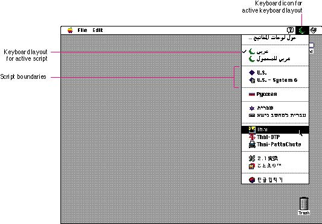

|
|
The Keyboard MenuUsers can install multiple script systems. A script system can contain multiple keyboard layouts that each map character codes to keys on a physical keyboard, can use input methods that act as a front end processor for text input in 2-byte scripts, and can support more than one attached physical keyboard.The Keyboard menu appears when more than one script system is present or a localizable resource flag is set. This menu simplifies the user's access to script systems, keyboard layouts, and input methods. The icon for the Keyboard menu appears between the icons for the Help menu and the Application menu. A keyboard icon appears next to each keyboard layout or input method name in the menu, and the icon of the active keyboard layout or input method appears in the menu bar. As Figure 4-89 shows, the Keyboard menu displays a list of installed keyboard layouts and input methods for each enabled script system. The Keyboard menu groups the keyboard layouts by script system, which are separated by dotted or gray lines. In Figure 4-89, there are several script systems that include keyboard layouts and input methods. Only one keyboard layout or input method and one physical keyboard are active at a time. Indicate the active condition by using a checkmark in the menu.  Users can change scripts by using this menu or by using a keyboard equivalent, Command-Space bar, to cycle through the scripts. The user can rotate through keyboard layouts or input methods within a script by using Command-Option-Space bar. Don't use the keyboard equivalents Command-Space bar and Command-Option-Space bar in your application because they are reserved for use by the Script Manager. See the section "Keyboard Equivalents," which begins on page 100, for a complete listing of reserved keyboard equivalents. A keyboard icon represents a localized keyboard layout or input method. If you develop keyboards or keyboard resources, you should provide customized icons. You need to create a 16-by-16 pixel icon in 1-bit, 4-bit, and 8-bit color. If you are designing a new keyboard icon, use a symbol to represent a keyboard layout for a region that is larger or smaller than a country or province. For example, a diamond represents the Roman Script System, which is used in the United States, Central America, South America, Australia, and most of Europe. Use the flag of a country or province if the keyboard layout is used only in that area. For example, the Union Jack represents the keyboard layout localized for use in Great Britain. Be sure to use the colors that appear on the nation's flag. You can also add a visual indicator to the flag to show some modification. Use a superscript diamond to indicate a QWERTY transliteration, which is a mapping of sounds from a language to the Roman keyboard layout. See Figure 8-47 in Chapter 8, "Icons," which begins on page 223, for examples of icons with these symbols. Also, see that chapter for more information on designing or creating keyboard and input method icons. |